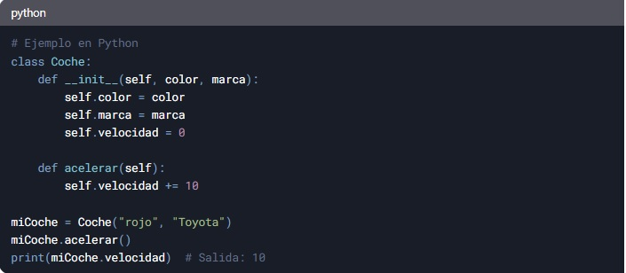
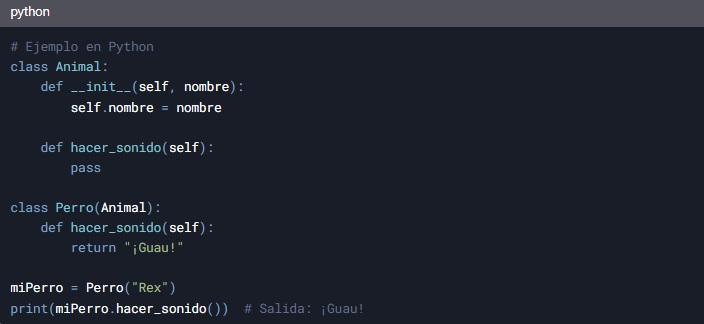
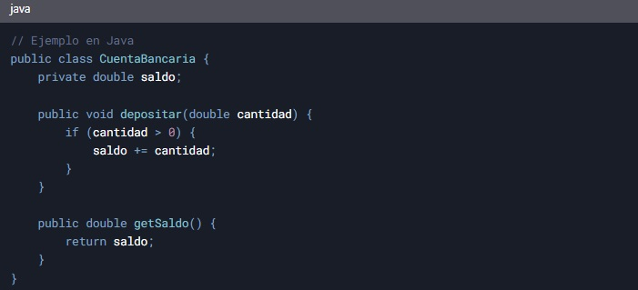
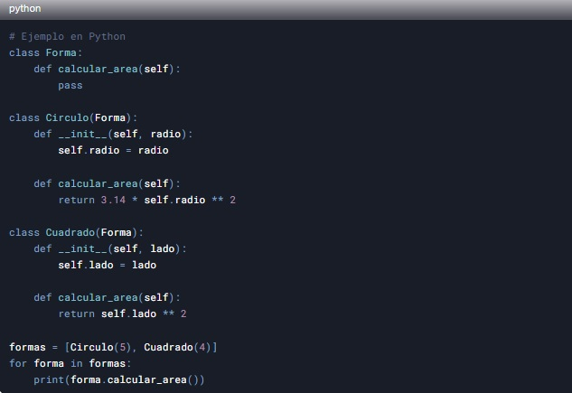
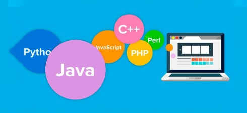
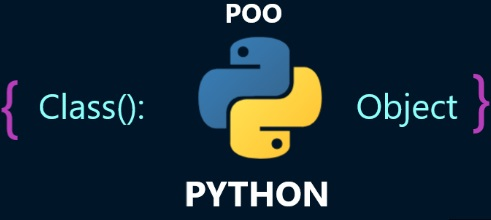

¿Qué es la Programación Orientada a Objetos?
La Programación Orientada a Objetos es un paradigma de programación que organiza el código en "objetos", los cuales representan entidades del mundo real. Estos objetos contienen datos (atributos) y comportamientos (métodos) que definen cómo interactúan entre sí.
La POO se basa en cuatro pilares fundamentales:
- Abstracción: Permite modelar entidades del mundo real como objetos con propiedades y comportamientos.
- Encapsulamiento: Oculta los detalles de implementación de un objeto y expone una interfaz para interactuar con él.
- Herencia: Permite crear nuevas clases basadas en clases existentes, heredando sus propiedades y métodos.
- Polimorfismo: Permite que los objetos de diferentes clases respondan a un mismo mensaje de diferentes maneras.
Estas Son las Bases acerca de la programacion Orientada a Objetos, en esta base se fundamenta el todo acerca de POO, que actualmente es una de las estructuras mas utilizadas a nivel mundial, pero ahora hablemos un poco mas acerca de ello.
Conceptos Básicos de Programación Orientada a Objetos
Los conceptos básicos de la POO incluyen:
- Clases: Plantillas para crear objetos. Definen las propiedades y comportamientos que los objetos creados a partir de la clase tendrán. Clase: Es una plantilla o molde que define las propiedades y comportamientos que tendrán los objetos. Por ejemplo, una clase Coche puede tener atributos como color, marca y velocidad, y métodos como acelerar() o frenar().
- Objetos: Instancias de clases. Representan entidades individuales con propiedades y comportamientos definidos por su clase. Es una instancia de una clase. Por ejemplo, un objeto de la clase Coche podría ser miCoche, con color "rojo", marca "Toyota" y velocidad "0".

- Herencia: Mecanismo que permite crear nuevas clases basadas en clases existentes, heredando sus propiedades y métodos. La herencia permite crear nuevas clases a partir de clases existentes, reutilizando código y extendiendo funcionalidades. La clase original se llama clase padre (o superclase), y la nueva clase se llama clase hija (o subclase).
Ejemplo: Si tienes una clase Animal, puedes crear una clase Perro que herede de Animal y añada métodos específicos, como ladrar().

- Encapsulamiento: Técnica que restringe el acceso directo a algunos de los componentes de un objeto, protegiendo su estado interno. El encapsulamiento es el mecanismo que oculta los detalles internos de un objeto y restringe el acceso directo a sus datos. Esto se logra usando modificadores de acceso (como public, private o protected en algunos lenguajes).
Ejemplo: En una clase CuentaBancaria, el saldo (saldo) podría ser privado, y solo se podría modificar mediante métodos como depositar() o retirar().

- Polimorfismo: Capacidad de los objetos de diferentes clases relacionadas por herencia de responder a la misma interfaz o método de diferentes maneras. El polimorfismo permite que un objeto se comporte de diferentes maneras según el contexto. Esto se logra sobrescribiendo métodos en las clases hijas o usando interfaces.
Ejemplo: Si tienes una clase Forma con un método calcularArea(), las clases Círculo y Cuadrado pueden implementar este método de manera diferente.

- Abstracción: Proceso de ocultar los detalles complejos de implementación y mostrar solo la funcionalidad esencial del objeto. La abstracción consiste en simplificar un problema complejo identificando solo los aspectos más importantes. En POO, esto se logra definiendo clases que representen conceptos del mundo real sin incluir detalles innecesarios.
Ejemplo: Si estás creando un programa para gestionar una biblioteca, puedes abstraer conceptos como Libro, Usuario y Préstamo, ignorando detalles como el material de las estanterías.
Estos conceptos son fundamentales para entender y utilizar la Programación Orientada a Objetos de manera efectiva.
Ventajas de la Programación Orientada a Objetos (POO)
La Programación Orientada a Objetos (POO) como ya hemos dicho es un paradigma de programación que organiza el software en torno a "objetos" que representan entidades del mundo real. Este enfoque ofrece numerosas ventajas que lo convierten en una de las metodologías más utilizadas en el desarrollo de software moderno. Algunas de sus principales ventajas son:
- Modularidad: La POO permite dividir el programa en módulos independientes llamados clases, lo que facilita la organización del código. Cada clase encapsula una funcionalidad específica, lo que simplifica su mantenimiento y actualización.
- Reutilización de código: Gracias a la herencia y la composición, las clases y objetos pueden ser reutilizados en diferentes partes del programa o incluso en otros proyectos. Esto reduce la duplicación de código y ahorra tiempo en el desarrollo.
- Facilidad de mantenimiento: Al estar el código organizado en clases y objetos, es más sencillo localizar y corregir errores. Además, los cambios en una parte del sistema tienen menos probabilidades de afectar otras partes, lo que mejora la estabilidad del software.
- Escalabilidad: La POO facilita la ampliación del programa mediante la adición de nuevas clases y objetos sin afectar el funcionamiento del resto del sistema. Esto es especialmente útil en proyectos grandes y complejos que evolucionan con el tiempo.
- Abstracción: La POO permite ocultar los detalles de implementación y exponer solo la funcionalidad necesaria. Esto simplifica el uso de las clases y objetos, ya que los desarrolladores pueden interactuar con ellos sin necesidad de conocer su funcionamiento interno.
- Encapsulamiento: Los datos y métodos relacionados se agrupan dentro de una clase, protegiendo la información de accesos no autorizados. Esto mejora la seguridad y la integridad del código.
- Polimorfismo: Permite que objetos de diferentes clases respondan de manera distinta a un mismo mensaje o método. Esto aumenta la flexibilidad del código y facilita la creación de sistemas más dinámicos y adaptables.
En resumen, la POO no solo mejora la estructura y organización del código, sino que también promueve prácticas de desarrollo más eficientes y sostenibles. Estas características la hacen ideal para proyectos de mediana y gran envergadura, donde la claridad, la reutilización y la escalabilidad son fundamentales.
Lenguajes de Programación Populares

Existen muchos lenguajes de programación, cada uno con sus propias características y usos. Algunos de los lenguajes más populares incluyen Python, JavaScript, Java, C++, y C#. Cada uno de estos lenguajes tiene sus propias ventajas y desventajas, y es importante elegir el lenguaje adecuado para el proyecto en el que estás trabajando.
Recursos para Aprender a Programar

Si estás interesado en aprender a programar, hay muchos recursos disponibles en línea que pueden ayudarte a adquirir las habilidades necesarias. Algunos de los recursos más populares incluyen tutoriales en video, cursos en línea, libros, y comunidades en línea donde puedes hacer preguntas y obtener ayuda de otros programadores.
Te Presento un Recurso sobre Clases, Puedes Acceder para Obtener mas informacion tcnica acerca de POO.
RecursoExternoPython
Tambien te voy a Compartir Tutoriales muy interesantes para que puedas revisarlos
Sobre el Creador
Esta página fue creada por Mario Meza, Estudiante de Desarrollo de software del tercer semestre en el instituto Tecnologico Superior ITECSUR.
Se Presenta el Trabajo como una guia practica a la programacion orientada a Objetos.